OPERATION MANUAL
LOVE LIVING
ホームページ運用マニュアル
お知らせ・イベントの更新と、日々の運用のしかた
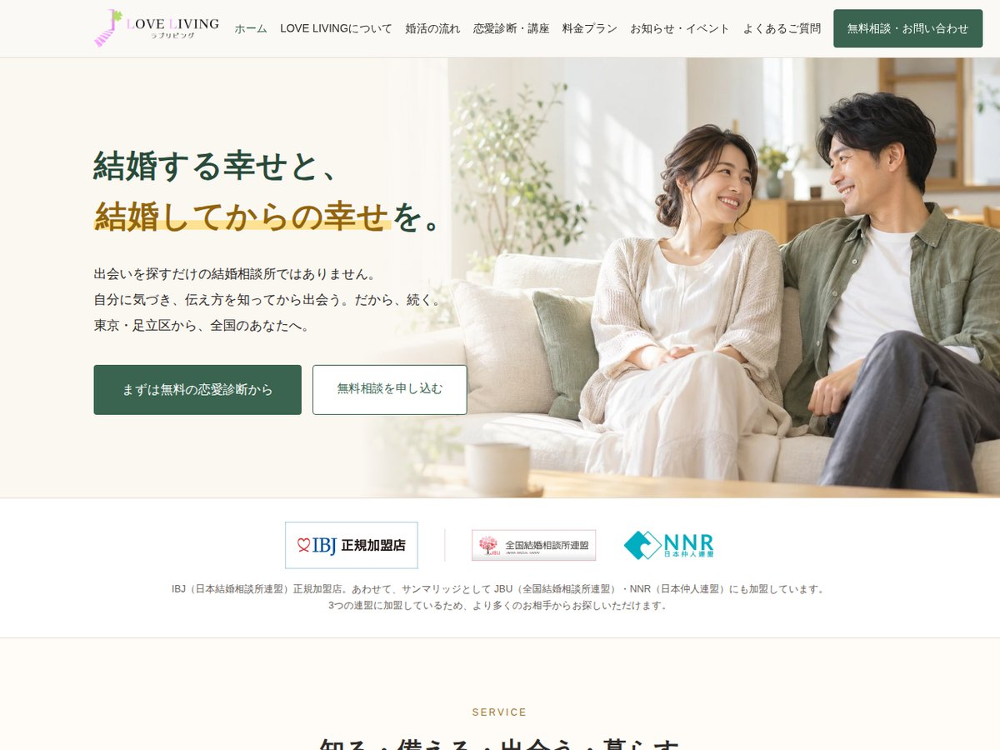
対象サイト：https://loveliving-marriage.com/
2026年10月版
もくじ
- このマニュアルでできること
- 管理画面に入る（ログイン）
- お知らせ・イベントを投稿する
- スマートフォンで投稿する
- 投稿を直す・消す
- お問い合わせが届いたら
- お支払い方法・口座振替日・キャンペーンを変える
- 月に1回のお手入れ
- やってはいけないこと
- お金と契約のこと（サーバー・ドメイン）
- 困ったとき
いちばんよく使うのは「3. お知らせ・イベントを投稿する」です。
はじめは、パソコンで一度ためしてから、スマートフォンでも使ってみてください。
1. このマニュアルでできること
| ご自分でできること |
・お知らせ・イベントの記事を書く／写真を載せる
・記事を直す・消す
・お支払い方法、月会費の口座振替日を変える
・キャンペーンの日付・金額を変える／終わったら消す
・お問い合わせを受け取る（メールで届きます） |
|---|
| 制作担当にご依頼いただくこと |
・トップページや料金表など、ページの文章・料金・写真の変更
・ページやメニューを増やす
・デザインの変更 |
|---|
どうして、ページの文章は自分で直せないの？
デザインが崩れないように、ページの中身は「テーマ」という仕組みの中に作り込んでいます。管理画面でページを開いて文字を書いても、ホームページには出ません。変更したいときは、制作担当にご連絡ください。
ホームページの「お知らせ・イベント」のしくみ
- 記事を公開すると、トップページと「お知らせ・イベント」ページに、自動で新しい順に並びます。
- トップページには、新しいものから3件まで表示されます。
- 記事が1件もないときは、トップページのお知らせ欄は表示されません。
2. 管理画面に入る（ログイン）
ブラウザ（Chrome・Safari など）で、次のアドレスを開きます。
https://loveliving-marriage.com/wp-admin/
※エックスサーバーから届いたメール「サーバーアカウント設定完了のお知らせ」の「管理画面URL」と同じです。ブックマークしておくと便利です。
- 「ユーザー名またはメールアドレス」を入れる
- 「パスワード」を入れる
- ログイン を押す
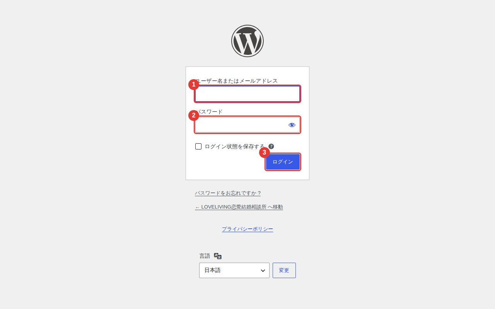
ログイン画面
パスワードは、ほかの人に教えないでください。
メモは、人の目に触れない場所に保管してください。ホームページの完成後、パスワードを変えていただくことをおすすめします。
ログインできないとき
・ログイン画面の「パスワードをお忘れですか？」から、登録したメールアドレスにパスワードを作り直すメールが届きます。
・海外からはログインできません（エックスサーバーの安全のための設定です）。旅行中などは、帰国してから操作してください。
3. お知らせ・イベントを投稿する
3-1. 新しい記事を作る
- 左のメニューの「投稿」を押す
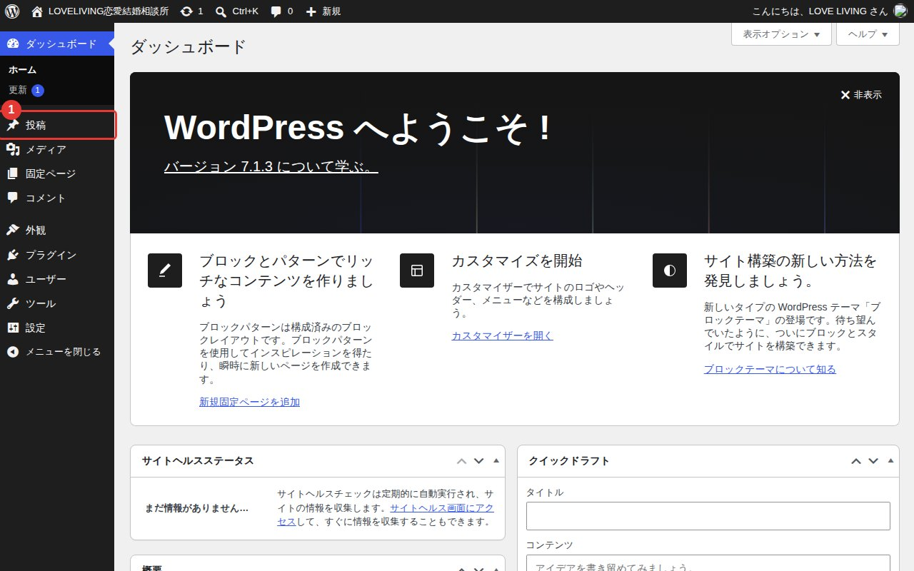
ログイン後の画面（ダッシュボード）
- 上の「投稿を追加」を押す
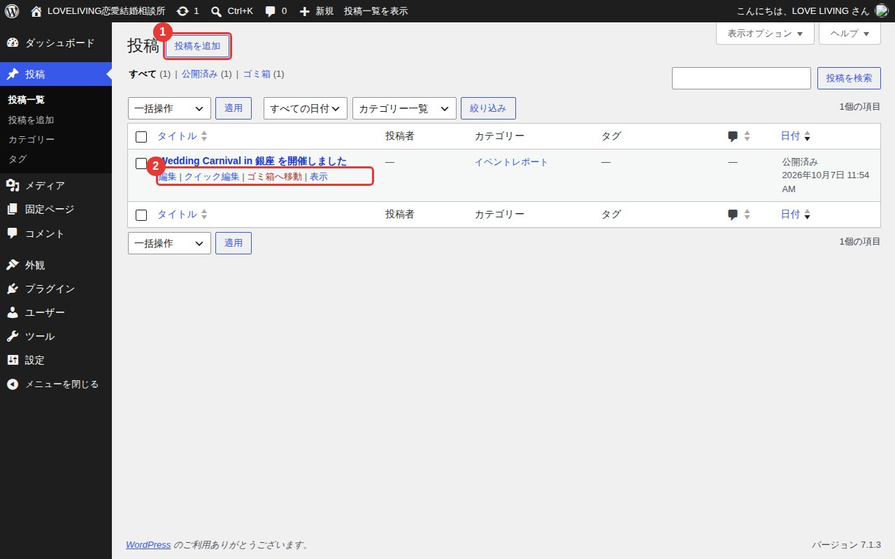
投稿の一覧
3-2. タイトルと文章を書く
- タイトルを書く（例：11月の婚活パーティーのお知らせ）
- その下に文章を書く。Enter で次の段落になります
- 写真を入れたいときは、左上の ＋ を押す（次のページ）
- 最後に右上の 公開 を押す（3-5）
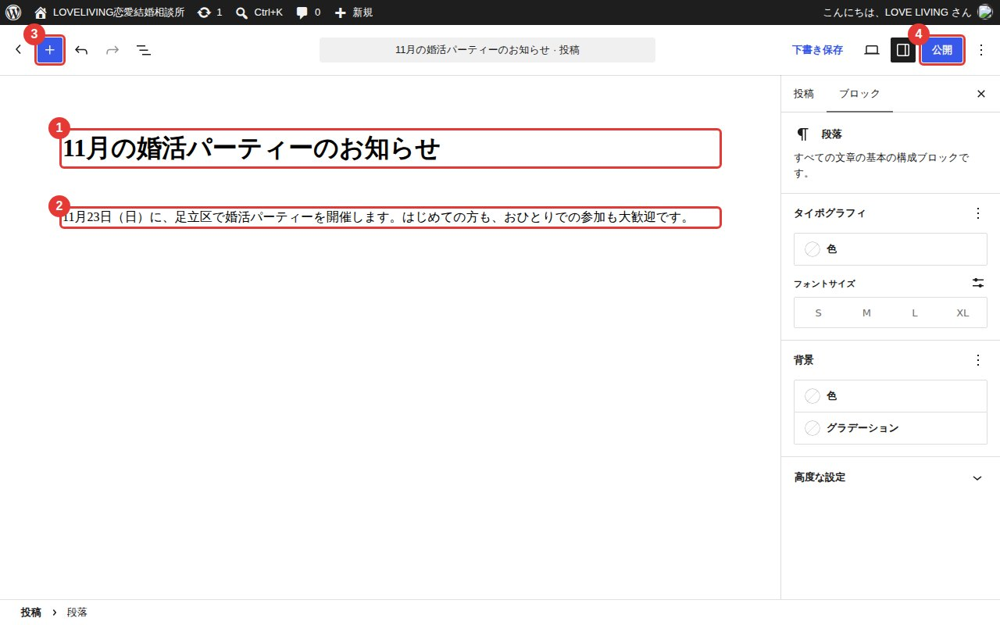
記事を書く画面
イベント告知に書いておくとよいこと
日時／場所／参加費／対象（年齢など）／定員／お申し込み方法（公式LINE・お問い合わせフォームなど）
3-3. 写真を入れる
左上の ＋ を押すと、入れられるものの一覧が出ます。
- 画像：写真を1枚入れる
- ギャラリー：写真を何枚かまとめて並べる（イベントの様子などに便利）
押したあと「アップロード」を選び、パソコンやスマートフォンの中の写真を選びます。
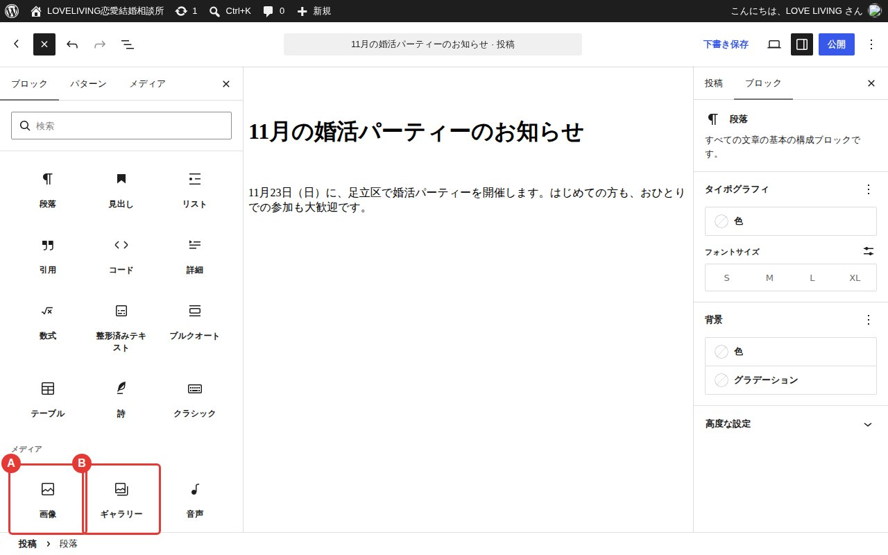
＋を押したところ
参加者のお顔が写った写真は、必ずご本人の了承を取ってから載せてください。
婚活中であることを知られたくない方もいらっしゃいます。了承がない場合は、後ろ姿や会場の写真にするか、お顔が分からないように加工したものを使ってください。
写真の大きさ
スマートフォンで撮った写真をそのまま入れて大丈夫です。自動で、ちょうどよい大きさに調整されます。
3-4. 一覧に出る写真・説明・種類を決める
画面の右側（「投稿」タブ）で設定します。右側が出ていないときは、右上の □ ボタンを押します。
- アイキャッチ画像を設定：一覧やトップページに出る写真。横長の写真がきれいに見えます
- 抜粋を追加：一覧に出る1〜2行の説明。Googleの検索結果やSNSにも使われます
- カテゴリー：記事の種類を1つ選んでチェック
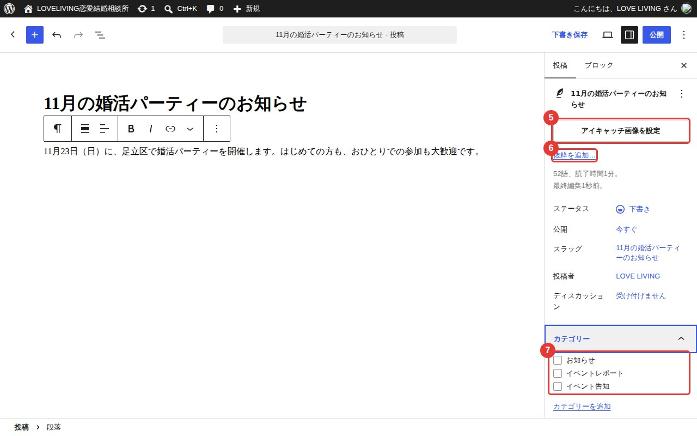
右側の設定
| イベント告知 | これから開くイベントのご案内 |
|---|
| イベントレポート | 開いたイベントの様子（写真つきがおすすめ） |
|---|
| お知らせ | キャンペーン、お休みのご案内など。何も選ばないと、ここに入ります |
|---|
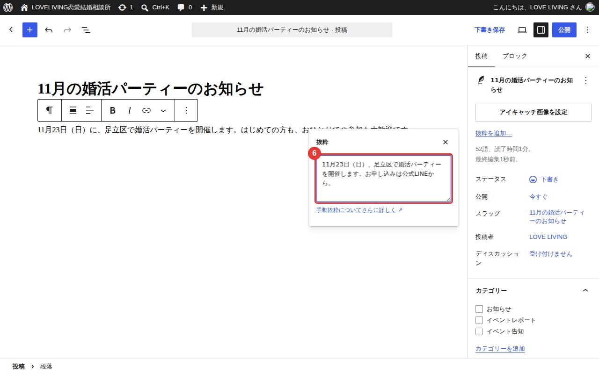
「抜粋を追加」を押したところ。1〜2行で書きます
アイキャッチ画像・抜粋は、入れなくても表示は崩れません。
写真がないときはロゴが表示され、抜粋がないときは文章の最初の部分が表示されます。
3-5. 公開する
- 右上の 公開 を押すと確認が出るので、もう一度 公開 を押す
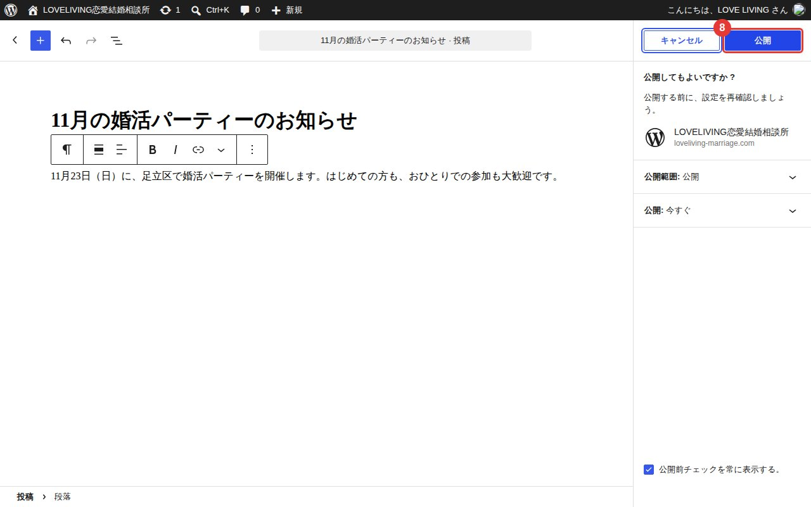
最後の確認
あとで公開したいとき（予約投稿）
右側の「公開：今すぐ」を押して日時を選ぶと、その日時に自動で公開されます。
途中でやめたいときは「下書き保存」を押します。ホームページには出ません。
4. スマートフォンで投稿する
やり方はパソコンと同じです。画面が小さいので、ボタンの場所だけ覚えてください。
- ログインしたら、左上の ≡ → 「投稿」 → 「投稿を追加」
- タイトルと文章を書く
- 写真は ＋ → 「画像」または「ギャラリー」→「アップロード」→ 写真を選ぶ（その場で撮影もできます）
- アイキャッチ画像・抜粋・カテゴリーは、□（設定）ボタンの中にあります
- 最後に 公開 → もう一度 公開
イベントの当日でも
会場で写真を撮って、その場で「イベントレポート」として投稿できます。
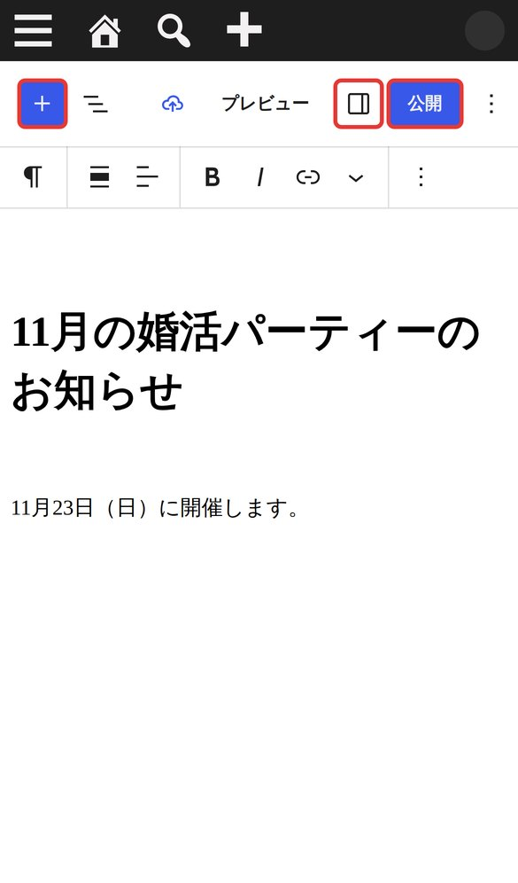
スマートフォンの画面
（左から ＋／設定／公開）
5. 投稿を直す・消す
- 左のメニューの「投稿」を押す
- 直したい記事のタイトルの上にマウスをのせると、下に文字が出ます
・編集：直す（直したら右上の 保存）
・ゴミ箱へ移動：消す
2 の位置に「編集」「ゴミ箱へ移動」が出ます（スマートフォンでは、記事を押すと出ます）
まちがえて消したとき
「投稿」の一覧の上にある「ゴミ箱」から元に戻せます。ゴミ箱の記事は、30日たつと自動で完全に消えます。
6. お問い合わせが届いたら
ホームページのお問い合わせフォームから送信があると、次のメールが届きます。
| 有馬様に届くメール | 件名：【LOVE LIVING】お問い合わせがありました（○○ 様）
お名前・年齢・ご希望の内容・ご連絡方法・ご相談内容などが書かれています。 |
|---|
| お客様に届くメール | 件名：【LOVE LIVING】お問い合わせを受け付けました
（自動で送られる確認のメールです） |
|---|
- メールの「ご希望のご連絡方法」（メール・電話・公式LINE）を確認します
- メールで返すときは、届いたメールにそのまま「返信」すれば、お客様あてになります
- 「ホームページを見た：はい」となっている方は、キャンペーンの対象です
メールが届かないときは、「迷惑メール」フォルダを見てください。
送信元は wordpress@loveliving-marriage.com です。迷惑メールに入っていたら「迷惑メールではない」に設定してください。それでも届かないときは、制作担当にご連絡ください。
7. お支払い方法・口座振替日・キャンペーンを変える
クレジットカードやPay払いが使えるようになったときは、ここを変えます。
料金プラン・よくあるご質問・特定商取引法の表記の3ページに、自動で反映されます。
- 左のメニューの「外観」→「カスタマイズ」を開き、「LOVE LIVING の設定」を押す
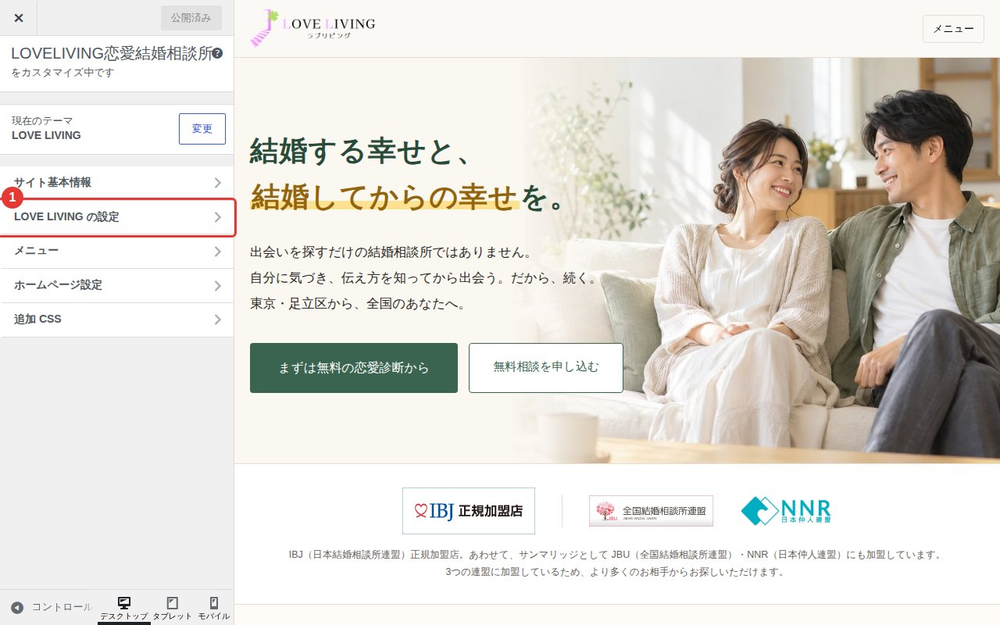
カスタマイズの画面
- お支払い方法：例）現金／銀行振込／口座引き去り／クレジットカード
- 補足（なくてもOK）：例）初期費用・成婚料は、クレジットカード・PayPayでもお支払いいただけます
- 口座振替日：数字だけ入れます（例：27）
- お問い合わせの送信先：お問い合わせメールを受け取るアドレス
- 最後に左上の 公開 を押して保存
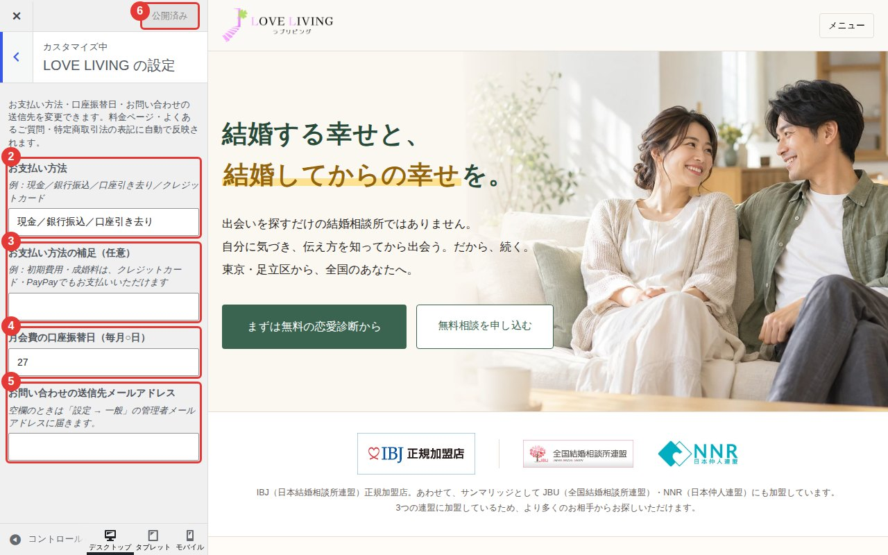
「LOVE LIVING の設定」を開いたところ。右側で、変えた結果を確認できます
キャンペーンの日付・金額を変える
トップページと料金プランの「ホームページ公開記念」クーポンです。
- 「外観」→「カスタマイズ」→ 「LOVE LIVING キャンペーン」を押す
- 1段目〜3段目の金額・開始日・終了日を書きかえる（例：2026年10月15日）
- 左上の 公開 を押して保存
キャンペーンが終わったら
「キャンペーンを表示する」のチェックを外して 公開 を押すと、欄ごと消えます。
1つの段だけ消したいときは、その段の金額を空欄にします。
8. 月に1回のお手入れ
ホームページを安全に保つため、月に1回、次のことをしてください（5分ほど）。
- 左のメニューの「ダッシュボード」→「更新」を開く（数字が出ていたら、更新があります）
- 「プラグイン」の欄で「すべて選択」にチェック → プラグインを更新
- 終わったら、ホームページを開いて、表示がおかしくないか見る
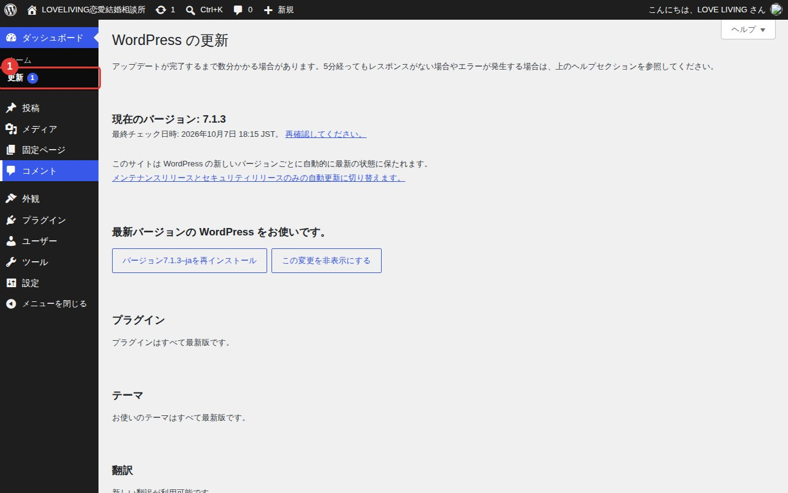
更新の画面
「WordPress の新しいバージョン」が出ているとき
小さな更新は自動で行われます。大きな更新（数字の最初が変わるもの）は、制作担当に相談してから行ってください。
テーマ（LOVE LIVING）の更新は表示されません。変更があるときは制作担当からお送りします。
もしものとき
エックスサーバーが、ホームページを毎日自動で保存しています（過去14日分）。表示がおかしくなっても戻せるので、あわてずに制作担当へご連絡ください。
9. やってはいけないこと
次のことをすると、ホームページが表示されなくなったり、デザインが崩れたりします。
| テーマを変える・消す | 「外観」→「テーマ」の LOVE LIVING は、変えたり消したりしないでください。 |
|---|
| 固定ページを消す・名前を変える | 「固定ページ」にある「ホーム」「料金プラン」などは、消さない・タイトルやURL（スラッグ）を変えないでください。 |
|---|
| 知らないプラグインを入れる | 便利そうに見えても、入れる前に制作担当にご相談ください。 |
|---|
| 「設定」の中を変える | とくに「表示設定」「パーマリンク」は変えないでください。 |
|---|
| ユーザーを増やす | スタッフ用のログインを作りたいときは、ご相談ください。 |
|---|
迷ったら、押す前にご連絡ください。「これを押していいか」だけのご質問でも大丈夫です。
10. お金と契約のこと（サーバー・ドメイン）
ホームページは、エックスサーバーとの契約で動いています。お支払いが止まると、ホームページが消えてしまいます。
| サーバー | エックスサーバー（スタンダード）。契約期間が終わる前に、更新のお支払いが必要です。 |
|---|
| ドメイン | loveliving-marriage.com（サーバー契約の特典で無料）。サーバー契約を続けている限り無料です。 |
|---|
| おすすめ | エックスサーバーの管理画面で「自動更新」をオンにし、クレジットカードの有効期限が切れたら、カード情報を新しくしてください。 |
|---|
エックスサーバーからのメールは、見落とさないでください。
「更新期限のお知らせ」などのメールが届きます。
※最近、エックスサーバーを名乗るにせのメール（フィッシング）も出回っています。メールのリンクからではなく、ブックマークしたエックスサーバーの管理画面から確認してください。
11. 困ったとき
制作担当（ディレット）へ、ココナラのメッセージでご連絡ください。
次の3つを教えていただけると、早く解決できます。
- どのページで（例：トップページ、記事を書く画面）
- 何をしたらどうなったか（例：公開を押したら、エラーが出た）
- その画面のスクリーンショット